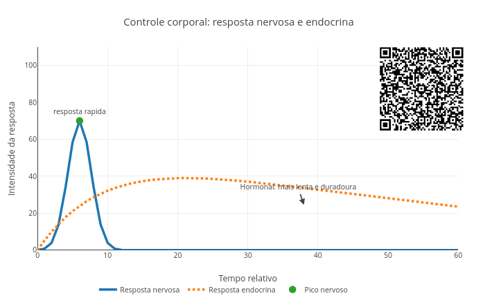
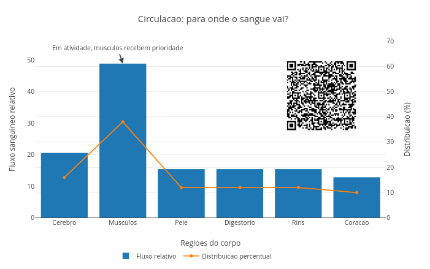
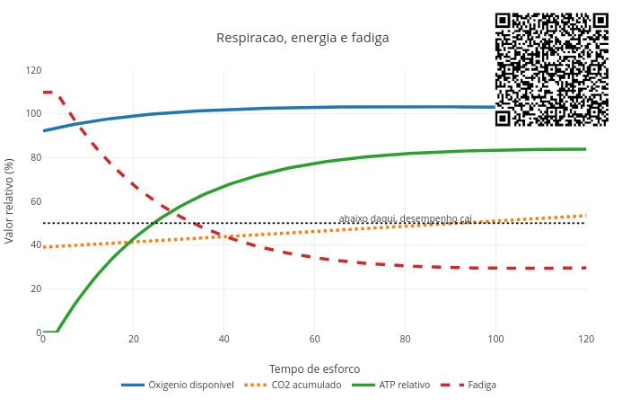
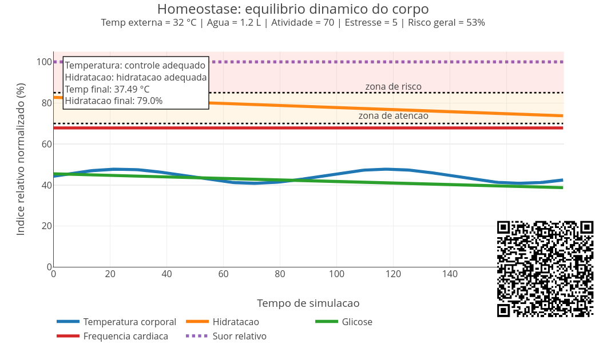
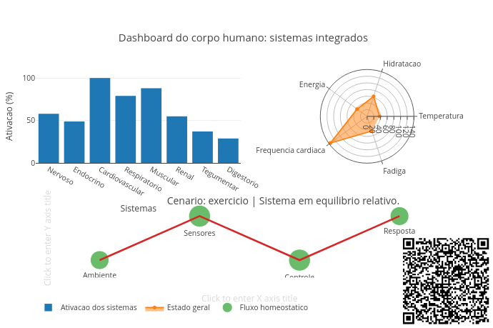

8 Corpo Humano: integração e controle
Você está vivo ! E por óbvio, já que está lendo esse trecho. Mas já parou pra pensar na complexidade que agora atua em seu corpo sem que você perceba ? Seu coração está batendo, seu cérebro está processando informações, seu pulmão está trocando gases, seu corpo está regulando temperatura e seu sangue está transportando uma quantidade imensa de moléculas. E tudo isso acontece ao mesmo tempo, em perfeita coordenação. Independentemente de qual órgão esteja se pronunciando agora, o corpo humano não é um conjunto de partes separadas, mas um sistema integrado por sistemas.
O sistema nervoso atua controlando rapidamente tudo, enquanto o sistema endócrino possui controle bem mais lento. O sistema cardiovascular permite o transporte de oxigênio e nutrientes, ao passo que o sistema respiratório a trocas gases com o ambiente. Por sua vez, o sistema digestório troca matéria e energia, enquanto o sistema excretor garante o equilíbrio interno do organismo. O sistema muscular atua no movimento do corpo humano e o sistema imunológico, na sua defesa.
Este capítulo busca fazer um estudo diferente desses sistemas, integrando-os às funções do corpo humano de forma conjunta. Assim como um carro não anda somente juntando motor, rodas e volante, também não há rim, cérebro ou fígado que opere sozinho e sem interação com o restante do corpo (…ainda).
Depois de explorar, você consegue:
- Entender como sistemas do corpo se comunicam;
- Interpretar respostas fisiológicas dos diversos sistemas;
- Relacionar energia, transporte e controle no corpo humano;
- Explorar cenários reais com modelos computacionais interativos.
O corpo atua como um sistema de controle em tempo real. Durante seu funcionamento, as respostas rápidas do sistema nervoso e as duradouras do sistema endócrino (hormônios) se equilibram na comunicação biológica entre seus diversos tecidos vivos.
Sistema nervoso e sistema endócrino
O JSPlotly que abre esse capítulo na Figura 8.2 busca um panorama sobre essa integração entre o impulso rápido e o sinal prolongado. Experimente-o antes de tentar abordar os conceitos.

O script compara o controle do sistema nervoso com o sistema endócrino do corpo humano. A resposta nervosa aparece como um pico rápido e breve. A resposta endócrina aparece como uma curva mais lenta e prolongada.
Agite antes de usar
O app gera um gráfico em que a curva “nervosa” mostra uma resposta rápida, pontual e intensa. Já a curva “endócrina” mostra uma resposta mais gradual e sustentada.
Execute o script com:
const tipo = "ambos";
const estimulo = 70;Depois teste:
const tipo = "nervoso";
const tipo = "endocrino";E altere a intensidade:
const estimulo = 30;
const estimulo = 100;Observe como as duas respostas mudam.
Por que o corpo precisa de respostas rápidas e respostas lentas ?
Algumas situações exigem reação imediata, como retirar a mão de algo quente, ajustar a postura, responder a um susto ou contrair um músculo rapidamente. Outras exigem controle prolongado, como é comum no metabolismo, na regulação do crescimento, na manutenção sanguínea de glicose, no ajuste do equilíbrio hídrico, e no preparo para estresse prolongado. Esse equilíbrio corporal é obtido nas “conversas” entre o sistema nervoso e o sistema endócrino. Segue um tutorial para uso rápido do script.
- Rode o script com
tipo = "ambos"; - Observe a resposta nervosa;
- Observe a resposta endócrina;
- Compare a velocidade das duas curvas;
- Troque para
tipo = "nervoso"; - Veja apenas a resposta rápida;
- Troque para
tipo = "endocrino"; - Veja apenas a resposta prolongada;
- Aumente
estimulo; - Observe se as duas respostas ficam mais intensas.
Veja que o corpo está respondendo rápido e sustentando a resposta, tudo ao mesmo tempo. Experimente também alguns contextos para sedimentar essa ideia:
- Resposta nervosa isolada. Por que uma resposta rápida também precisa acabar rapidamente ?
const tipo = "nervoso";- Resposta endócrina isolada. Por que sinais hormonais costumam durar mais tempo ?
const tipo = "endocrino";- Comparação simultânea. Em que momentos as duas respostas são mais diferentes ?
const tipo = "ambos";- Estímulo fraco. Um estímulo pequeno gera controle suficiente ?
const estimulo = 25;- Estímulo intenso. O corpo responde apenas aumentando a intensidade ou também mudando o tempo da resposta ?
const estimulo = 100;Depois de testar como acima, perceba que o sistema nervoso funciona como um alerta imediato, enquanto que o sistema endócrino funciona como uma regulação mais prolongada. Ou seja, a vida em funcionamento exige velocidade e duração.
Por dentro do script
O script começa com dois controles principais:
const tipo = "ambos";
const estimulo = 70;A variável tipo escolhe quais curvas aparecem e a variável estimulo controla a intensidade da resposta. As respostas são calculadas em um modelo bastante simplificado, mas o suficiente para que se perceba as diferentes atuações dos dois sistemas.
A resposta nervosa é calculada como um pico rápido:
const n = estimulo * Math.exp(-0.18 * Math.pow(i - 6, 2));Ela sobe e cai em pouco tempo. Já a resposta endócrina é mais lenta:
const e = estimulo * (1 - Math.exp(-0.08 * i)) * Math.exp(-0.018 * i);Ela cresce gradualmente e demora mais para desaparecer. Embora os modelos matemáticos envolvidos constituam uma simplificação extrema do que ocorre no mundo real, o gráfico permite a comparação entre os dois tipos de controle fisiológico. Quando você leva um susto, corre, sente fome, regula temperatura ou mantém glicose no sangue, seu corpo combina sinais rápidos e lentos. O corpo humano depende de integração.
Sistema circulatório
Nenhum órgão funciona sozinho no corpo. Nervos, hormônios, músculos, glândulas e órgãos conversam o tempo todo para manter o corpo funcionando. Para que isso ocorra, é necessário também que haja um sistema de distribuição para as substâncias que vão permitir essa comunicação, o que se dá pelo sistema circulatório. Assim, o corpo usa o tecido sanguíneo como um meio de transporte para as substâncias, decidindo para onde mandar o sangue conforme a necessidade.
O JSPlotly da Figura 8.3 simula a distribuição do fluxo sanguíneo para diferentes regiões do corpo. Você observa como o sangue é direcionado para o cérebro, músculos, pele, sistema digestório, rins e coração.

Agite antes de usar
As barras do gráfico mostram o fluxo relativo para cada região, enquanto a linha mostra a distribuição percentual.
Execute o script com:
const atividade = "moderada";
const frequencia = 90;
const resistencia = 1.0;Depois teste:
const atividade = "repouso";
const atividade = "intensa";E altere:
const frequencia = 140;
const resistencia = 1.8;Observe como o fluxo muda.
Como o corpo decide quais órgãos devem receber mais sangue ?
Em repouso, órgãos do sistema digestório e rins recebem grande parte do fluxo sanguíneo. Durante atividade intensa, por outro lado, os músculos passam a receber prioridade. Isso ocorre porque o sangue transporta oxigênio, nutrientes, hormônios, calor e resíduos metabólicos. Assim, o coração bate e impulsiona o sangue estrategicamente para distribuir oxigênio e nutrientes para os tecidos. Segue um modo de uso rápido para o app.
- Rode o script em atividade
"moderada"; - Observe quais órgãos recebem mais fluxo;
- Troque para
"repouso"; - Veja o aumento relativo para digestório e rins;
- Troque para
"intensa"; - Observe a prioridade muscular;
- Aumente
frequencia; - Veja o fluxo relativo subir;
- Aumente
resistencia; - Observe o efeito contrário sobre o débito.
“Brincando” de comandar a circulação como acima, você deve perceber que o corpo aumenta e redistribui o fluxo total de sangue ao mesmo tempo. Seguem alguns cenários para você “circular”.
- Repouso. Por que digestório e rins recebem mais fluxo quando o corpo está em repouso ?
const atividade = "repouso";
const frequencia = 60;- Atividade moderada. Como o corpo começa a priorizar os músculos ?
const atividade = "moderada";
const frequencia = 90;- Atividade intensa. Por que os músculos passam a dominar a distribuição do fluxo ?
const atividade = "intensa";
const frequencia = 150;- Alta resistência. Por que maior resistência dificulta o fluxo sanguíneo ?
const resistencia = 2.0;- Baixa resistência. Como vasos mais dilatados favorecem maior fluxo ?
const resistencia = 0.6;Observe que, quando a atividade aumenta, o padrão muda, com os músculos recebendo mais sangue e o sistema digestório e rins recebendo menos. Quando você corre, estuda, dorme, come ou sente frio, seu sistema circulatório muda sua distribuição. O coração bombeia, os vasos regulam e os órgãos disputam prioridade conforme a necessidade. O corpo humano funciona porque consegue ajustar fluxo, pressão e entrega de recursos continuamente. Em outras palavras, para viver é necessário distribuir energia, oxigênio e matéria no momento certo.
Por dentro do script
Outra vez, o modelo matemático inserido no script é apenas didático, estando a anos-luz do que realmente ocorre nos tecidos do corpo.
O script começa escolhendo o nível de atividade:
const atividade = "moderada";Depois define a frequência cardíaca:
const frequencia = 90;E a resistência vascular:
const resistencia = 1.0;O débito relativo é calculado por:
const debito = (frequencia / 70) * fatorAtividade / resistencia;Depois o script escolhe a distribuição percentual conforme a atividade.
Por exemplo, em atividade intensa:
distribuicao = [14, 58, 16, 4, 4, 4];Isso significa que os músculos recebem uma fração muito maior do fluxo. Por fim, o fluxo relativo é calculado por:
return v * debito;Dessa forma, o gráfico mostra tanto o total relativo quanto a distribuição entre órgãos.
Os JSPlotly das Figura 8.2 e Figura 8.3 acima mostram que o corpo humano funciona como um sistema de informação. O corpo detecta sinais por receptores sensoriais, processa esses sinais no cérebro juntamente com os hormônios, e responde a esses sinais com os músculos e glândulas. Ou seja:
\[ sensores \rightarrow processamento \rightarrow resposta \]
Metabolismo
As respostas corporais integradas pela circulação sanguínea permitem ajustes variados em função do “bombeamento” de oxigênio e de nutrientes. Isso possibilita ajustar as reações bioquímicas junto à respiração e ao metabolismo celular, permitindo que demandas energéticas diferentes exijam esforços do corpo também diferentes. O JSPlotly que segue busca avançar um pouquinho nessa ideia, a de que o corpo tenta sustentar energia enquanto o esforço cobra sua conta.

Respiração, energia e fadiga estão interligados quando o esforço físico encontra seu limite. O app da Figura 8.4 mostra como respiração, oxigênio, gás carbônico, produção de ATP e fadiga se relacionam durante um esforço.
ATP, ou adenosina trifosfato, é a “moeda” de troca energética dos seres vivos. No corpo humano, são produzidos em torno de 30 a 40 kg diariamente !! Achou estranho por que você pesa quase isso ?! Mas é assim mesmo. Ocorre que o corpo produz essa quantidade toda, mas também gasta tudo ao longo do dia, fazendo com que seu peso não mude por conta desse ciclo do ATP (faz e quebra).
Agite antes de usar
No aplicativo você acompanha quatro curvas:
- oxigênio disponível;
- CO\(_2\) acumulado;
- ATP relativo;
- fadiga.
A linha horizontal marca uma região crítica. Quando energia ou equilíbrio funcional caem abaixo desse limite, o desempenho tende a piorar. O ATP relativo mostra a capacidade de sustentar trabalho. A fadiga mostra o acúmulo de dificuldade fisiológica. E o oxigênio e gás carbônico mostram o papel da respiração.
Execute o script com:
const intensidade = 70;
const oxigenio = 100;
const freqResp = 22;Depois teste:
const intensidade = 95;
const freqResp = 35;E também:
const oxigenio = 60;Observe como ATP e fadiga mudam.
Por que o corpo se cansa quando a demanda supera a capacidade de sustentação ?
Durante o esforço, os músculos precisam de ATP. Para produzir ATP de forma eficiente, o corpo depende de O\(_2\) (inspiração), o qual é trazido pela respiração, convertido em CO\(_2\) nas células, e removido depois pela mesma respiração (expiração). Quando a demanda cresce demais ou a oferta não acompanha, o ATP relativo cai e o CO\(_2\) pode acumular, aumentando a fadiga e diminuindo o desempenho. O cansaço, nesse modelo, aparece como sinal de desequilíbrio.
Nesse simulação didática pra lá de simplificada, o nivelO2 representa oxigênio disponível, enquanto o nivelCO2 representa acúmulo de gás carbônico. Complementando, a variável energia representa ATP relativo e a variável cansaco representa fadiga. Assim, o gráfico mostra o corpo tentando equilibrar respiração, metabolismo e desempenho. Segue um tutorial para você experimentar.
- Rode o script com os valores originais;
- Observe o ATP relativo;
- Observe a fadiga;
- Compare oxigênio e CO₂;
- Aumente
intensidade; - Veja se a fadiga cresce mais rápido;
- Aumente
freqResp; - Observe se melhora a sustentação energética;
- Reduza
oxigenio; - Veja como a oferta limitada afeta o sistema.
Depois de “brincar” um pouco com o app, você perceberá que o limite do desempenho vem de um equilíbrio entre a intensidade do esforço e a capacidade do corpo em fornecer oxigênio. Vão abaixo alguns cenários para você experimentar, também.
- Esforço moderado. O corpo consegue sustentar ATP por mais tempo ?
const intensidade = 50;
const oxigenio = 100;
const freqResp = 18;- Esforço intenso. Por que a fadiga cresce rapidamente ?
const intensidade = 95;
const freqResp = 25;- Respiração aumentada. Maior frequência respiratória compensa completamente a demanda ?
const intensidade = 80;
const freqResp = 40;- Baixo oxigênio. Como menor disponibilidade de O\(_2\) afeta ATP e fadiga ?
const oxigenio = 55;- Alta intensidade com pouco oxigênio. Por que esse cenário leva rapidamente a queda de desempenho ?
const intensidade = 90;
const oxigenio = 50;Quando você corre, sobe escadas, pratica esporte ou sente falta de ar, seu corpo está tentando equilibrar demanda energética e oferta de oxigênio. Pulmões, sangue, coração, músculos e mitocôndrias trabalham juntos. Se uma parte falha, todo o desempenho muda. Portanto, fadiga não é “fraqueza”, mas uma resposta integrada do organismo diante de limites metabólicos.
Por dentro do script
O script começa com três controles principais:
const intensidade = 70;
const oxigenio = 100;
const freqResp = 22;A demanda aumenta com intensidade e tempo:
const demanda = 0.45 * intensidade + 0.8 * i / 10;A oferta depende do oxigênio disponível e da frequência respiratória:
const oferta = oxigenio * (freqResp / 20) * (1 - Math.exp(-0.04 * i));Depois o script calcula:
nivelO2
nivelCO2
energia
cansacoDepois de praticar nos JSPlotly do capítulo, você já consegue responder a alguns “por quês fisiológicos”. Por exemplo, por que seu coração acelera, por que você sua, e por que você cansa. Essa resposta integrada do corpo para manter as coisas em ordem é a homeostase, a qual permite que o corpo equilibre (ou não) tudo ao mesmo tempo.
Que tal então um JSPloty para ver essa tal de homeostase trabalhando a seu favor ?

O aplicativo da Figura 8.5 simula o funcionamento integrado do corpo diante de fatores desafiantes, como temperatura externa, hidratação, atividade física e estresse. No gráfico você acompanha as curvas de temperatura corporal, hidratação, glicose, frequência cardíaca e suor.
Agite antes de usar
As zonas coloridas do gráfico indicam região de atenção e região de risco. Quando as variáveis entram nessas zonas, o equilíbrio está sendo perdido, o corpo está sob estresse e o sistema pode falhar.
Execute o script com:
const tempExterna = 32;
const agua = 1.2;
const atividade = 70;
const estresse = 5;Depois teste:
const tempExterna = 40;
const agua = 0.5;E também:
const atividade = 90;
const estresse = 8;Observe quando as curvas entram nas zonas de atenção e risco. Quando tudo está equilibrado a temperatura se mantém estável, a hidratação sustenta regulação, a energia é suficiente e o sistema então funciona em sua plenitude. Contudo, quando múltiplos fatores interferem, a temperatura pode subir, a água pode se tornar insuficiente, o coração acelera e o sistema entra em tensão. Isso mostra que, contrariamente ao ditado popular que diz que “o corpo é uma máquina perfeita”, a homeostase tem seus limites.
Teste o pequeno tutorial abaixo para uso do aplicativo.
- Rode o script com os valores iniciais;
- Observe todas as curvas juntas;
- Identifique quais variáveis mudam primeiro;
- Aumente
tempExterna; - Veja o impacto na temperatura e no suor;
- Reduza
agua; - Observe a perda de regulação;
- Aumente
atividade; - Compare com o aumento da frequência cardíaca;
- Combine fatores.
Note que o que mais pesa no desequilíbrio do corpo é uma combinação de calor, esforço e falta de água. Seguem alguns cenários para você se “hidratar” com o aplicativo.
- Condição equilibrada. Por que o sistema permanece estável ?
const tempExterna = 25;
const agua = 2.0;
const atividade = 40;
const estresse = 2;- Calor elevado. O corpo consegue compensar apenas com suor ?
const tempExterna = 42;- Desidratação. Por que a regulação térmica piora ?
const agua = 0.4;- Exercício intenso. Quais variáveis respondem mais rapidamente ?
const atividade = 95;- Estresse elevado. Por que o corpo responde mesmo sem esforço físico ?
const estresse = 9;- Tudo ao mesmo tempo. Por que o sistema entra rapidamente em zona de risco ?
const tempExterna = 38;
const agua = 0.6;
const atividade = 85;
const estresse = 7;Por dentro do script
O modelo conceitual começa com quatro variáveis principais que representam condições externas e internas:
const tempExterna
const agua
const atividade
const estresseEssas variáveis funcionam como forças que empurram o sistema. A cada instante de tempo (for (let i = 0; i <= 180; i++)), o modelo calcula como o corpo responde a essas forças. Primeiro, é estimado o quanto o corpo está sendo “pressionado”:
const calor = ...Esse termo combina temperatura externa, intensidade da atividade e nível de estresse, representando, portanto, a demanda fisiológica total. Depois, o script calcula a capacidade de compensação:
const regulacao = ...Aqui entra a água. Quanto maior a hidratação, maior a capacidade do corpo de dissipar calor e manter o equilíbrio. A temperatura corporal então surge do conflito entre esses dois fatores:
const tcorpo = ...Com calor aumentado e pouca regulação, a temperatura sobe. Com menos calor e boa regulação, a temperatura se mantém.
Em seguida, o modelo atualiza outras variáveis importantes:
hid: nível de hidratação ao longo do tempo;gli: glicose, influenciada por atividade e estresse;heart: frequência cardíaca;
sw: suor, que ajuda a resfriar, mas consome água.
Cada variável depende de várias outras, formando um sistema acoplado. Por fim, todas são normalizadas:
norm(v, min, max)Isso transforma valores reais em uma escala comum (0–100), permitindo comparar tudo no mesmo gráfico. A “alma” do script está em equilibrar a demanda (calor, esforço, estresse) com a regulação (água e respostas fisiológicas). E quando esse equilíbrio falha, o gráfico mostra.
Em termos de programação, o script segue uma lógica típica de modelos dinâmicos:
- Definir condições iniciais;
- Iterar no tempo;
- Atualizar variáveis a cada passo;
- Armazenar resultados;
- Visualizar o comportamento do sistema.
“E se” a gente tivesse um painel do corpo humano mostrando os sistemas em funcionamento ?
Resposta: a gente aguardaria mais um pouquinho essa seção de “devaneios científicos” só pra nos deliciarmos com esse painel. Então segue o dashboard na Figura 8.6 !

Agora o app reúne vários sistemas do corpo humano em um único painel. Nele você pode acompanhar a ativação dos sistemas corporais, o estado geral do organismo, e o fluxo homeostático, além de uma mensagem de alerta fisiológico.
Agite antes de usar
O app permite uma comparação entre os diversos sistemas fisiológicos:
"Nervoso",
"Endocrino",
"Cardiovascular",
"Respiratorio",
"Muscular",
"Renal",
"Tegumentar",
"Digestorio"Apór rodar o app, veja que o gráfico de barras mostra quais sistemas corporais estão mais ativados. O gráfico radar mostra o estado geral do organismo. O diagrama inferior resume a lógica da homeostase. E a mensagem central indica o principal alerta do cenário.
\[ Ambiente \rightarrow Sensores \rightarrow Controle \rightarrow Resposta \]
Execute o script com:
const cenario = "exercicio";Depois teste:
const cenario = "repouso";
const cenario = "calor";
const cenario = "altitude";
const cenario = "estresse";Observe como o painel muda em cada situação. E veja quais sistemas são mais ativados e qual alerta aparece.
Como o corpo integra vários sistemas para responder a diferentes desafios ?
Em repouso, o organismo tende ao equilíbrio. No exercício, músculos, coração e respiração ganham prioridade. No calor, pele, suor e hidratação tornam-se essenciais. Na altitude, a disponibilidade de oxigênio altera todo o sistema. No estresse, os sistemas nervoso e endócrino passam a comandar grande parte da resposta. Em outras palavras, a integração entre os diversos sistemas fisiológicos permite ao corpo adaptar-se a vários cenários. Segue um modo rápido de uso para o app.
- Rode o script com
cenario = "exercicio"; - Observe o gráfico de barras;
- Veja quais sistemas estão mais ativados;
- Observe o radar de estado geral;
- Leia a mensagem central;
- Troque para
cenario = "repouso"; - Compare o equilíbrio dos sistemas;
- Troque para
cenario = "calor"; - Observe hidratação, temperatura e pele;
- Troque para
cenario = "altitude"; - Observe o impacto do oxigênio;
- Troque para
cenario = "estresse"; - Compare nervoso, endócrino e frequência cardíaca.
Perceba que sistemas diferentes dominam a resposta em cada situação. Seguem alguns contextos para você “integrar” ao seu aprendizado.
- Repouso. Como o corpo se comporta quando há baixa demanda ?
const cenario = "repouso";- Exercício. Por que músculos, coração e respiração ganham prioridade ?
const cenario = "exercicio";- Calor. Por que temperatura e hidratação se tornam pontos críticos ?
const cenario = "calor";- Altitude. Como a queda de oxigênio altera energia, fadiga e respiração ?
const cenario = "altitude";- Estresse. Por que o corpo reage mesmo sem grande esforço físico ?
const cenario = "estresse";Quando você corre, sente calor, sobe um morro, passa por estresse ou simplesmente descansa, seu corpo reorganiza prioridades. Nenhum sistema trabalha sozinho, mas um acaba complementando o outro. O sistema nervoso detecta, o endócrino regula, o cardiovascular distribui, o respiratório fornece oxigênio para produção de energia, o muscular consome energia, o renal conserva ou elimina, a pele protege e regula temperatura, e o digestório participa do fornecimento de matéria e energia. Em síntese, o corpo responde a cada cenário como uma rede interconectada junto ao papel fisiológico dos diversos órgãos.
Por dentro do script
O script começa escolhendo um cenário:
const cenario = "exercicio";Cada cenário altera variáveis fisiológicas básicas:
atividade
tempExterna
oxigenio
agua
estresseEssas variáveis funcionam como condições do ambiente e do corpo. Depois, o script calcula a ativação dos sistemas:
const ativacao = [...]Cada sistema responde de forma diferente.
Por exemplo, o cardiovascular depende bastante de atividade e estresse:
40 + atividade * 0.7 + estresse * 2O respiratório responde à atividade e à falta de oxigênio:
35 + atividade * 0.55 + (100 - oxigenio) * 0.4O tegumentar responde ao calor externo:
30 + Math.max(0, tempExterna - 25) * 2.4Depois o script calcula indicadores gerais:
temperatura
hidratacao
energia
fc
fadigaEsses indicadores alimentam o gráfico radar. Por fim, o script gera uma mensagem de alerta:
mensagem = "Alerta..."A “alma” do script é transformar uma situação do corpo em três leituras simultâneas:
- quais sistemas foram ativados;
- como está o estado geral;
- que tipo de alerta fisiológico aparece.
É uma síntese visual de todo o capítulo.
Tá legal, mas e os “E se…” ?
“E se…” tivesse um E se mais integrador e com todos os Scripts do capítulo ?
E se você não estivesse olhando para gráficos…mas para um sistema vivo tentando sobreviver ?
E se cada script desse capítulo fosse apenas uma janela, e agora você pudesse ver tudo ao mesmo tempo ?
E se, ao iniciar uma corrida em um dia quente:
o sistema nervoso disparasse (Script no. 1),
o sangue fosse redirecionado para os músculos (Script no. 2),
a respiração tentasse sustentar ATP (Script no. 3),
a homeostase lutasse contra o calor e a desidratação (Script no. 4),
e o dashboard mostrasse tudo isso acontecendo simultaneamente (Script no. 5)?
Então você perceberia que não existe “um” sistema dominante, mas uma coordenação emergente.
- E se o oxigênio diminuísse, como em grandes altitudes ?
O Script no. 3 mostraria queda na produção de ATP; O Script no. 2 mostraria maior esforço respiratório; O Script no. 5 mostraria aumento da fadiga e reorganização sistêmica.
E o corpo responderia como pode: mais respiração, mais esforço, mais custo.
- E se a água acabasse ?
O Script no. 4 mostraria perda de regulação térmica; O Script no. 1 manteria resposta nervosa, mas com eficiência reduzida; O Script no. 5 indicaria alerta sistêmico.
A homeostase começaria a falhar não por um fator isolado, mas por uma cadeia de dependências.
- E se o estresse fosse o fator dominante ?
Sem movimento, sem calor extremo. Mesmo assim, a frequência cardíaca sobe, a glicose aumenta e os sistemas de controle são ativados. Nesse caso, o Script no. 5 mostraria que o corpo reage ao que percebe, não apenas ao que acontece fisicamente.
- E se todos os fatores se combinassem, calor, esforço, estresse, pouca água e baixo oxigênio ?
Aí não seria mais uma curva, mas um sistema sob pressão máxima. Os scripts deixariam de ser ferramentas isoladas e passariam a fazer parte de um único modelo no qual o corpo está tentando manter coerência interna em um mundo que muda para o colapso.
E se você fosse capaz de prever isso, de olhar para o gráfico e antecipar:
quando o desempenho cai;
quando a fadiga domina;
quando o risco aparece.
Então você estaria pensando como um sistema vivo, mais do que interpretando dados.
- E se o corpo fosse como um ecossistema, ou uma cidade, ou uma rede elétrica, ou ainda um planeta tentando manter o equilíbrio ?
Os mesmos princípios aparecem:
\[ fluxo \rightarrow regulação \rightarrow adaptação \rightarrow limite \]
- E se no final das contas, a ideia geral fosse viver equilibrando continuamente forças que nunca param de mudar, tendo a saúde não como um sinônimo de ausência de variação, mas sim como a capacidade de responder a ela ?
Nos limites do corpo humano, vemos princípios que se repetem em outros sistemas complexos. Um ecossistema, por exemplo, também precisa equilibrar fluxo de energia, disponibilidade de recursos e resposta a perturbações externas. Quando há excesso de calor, escassez de água ou aumento de estresse ambiental, espécies e populações reorganizam suas funções. Assim como órgãos e sistemas fazem no corpo. A homeostase biológica encontra paralelo direto na estabilidade ecológica, pois ambas são dinâmicas, nunca fixas, e sempre negociadas.
Em escala tecnológica e social, cidades e redes elétricas operam sob uma lógica semelhante. Sensores detectam mudanças, centros de controle processam informações e sistemas de resposta ajustam fluxos de energia, de pessoas, e de dados. Quando a demanda cresce além da capacidade de regulação, surgem falhas, sobrecargas ou colapsos. Assim como no corpo humano, não é um único componente que determina o funcionamento, mas a integração entre todos os componenentes. O que chamamos de “equilíbrio” é, na verdade, um processo contínuo de adaptação.
Levando a ideia ainda mais longe, é possível enxergar o próprio planeta, ou até sistemas cósmicos, sob essa perspectiva. Clima, ciclos biogeoquímicos e vida interagem como partes de um grande sistema autorregulado, sujeito a limites e transições críticas. O mesmo raciocínio vale para fluxo, regulação, resposta e limite. Ao compreender o corpo humano como um sistema integrado, você passa a reconhecer esse padrão em diferentes escalas do universo. No fundo, o mundo também é uma extensão da fisiologia humana.
Separação de comandos, inserção de comentários, e boas práticas
Os comandos em JS são separados por ponto e vírgula, “;”. Já os comentários constituem trechos não interpretados, comumente utilizados em programação. Comentários são tremendamente úteis quando se deseja colocar um título no script de código, por exemplo, como para explicar quem é quem nas variáveis ou explicar uma determinada ação no código, bem como apontar uma futura melhoria, entre muitos (lista ToDo, ou “para fazer”). Em JS, os comentários são alternativamente inseridos por ” // “ antes de cada comando, ou por ” /…./ “, para comentários mais extensos (mais de uma linha).
Códigos em JS podem ser inseridos também junto à páginas web (HTML) com seus comandos intercalados pela notação que segue (etiquetas ou tags):
Uma característica interessante no JS é que tanto faz colocar ou não espaços entre os comandos, pois a linguagem não interpreta esses espaços. Contudo, dentro das boas práticas em programação, é aconselhável separar blocos de comandos por identação de 2 espaços, de modo a facilitar a leitura do código. A identação é feita com a barra de espaços do teclado, por exemplo, mas há alguns programas fazem isso automaticamente enquanto ao se clicar em Enter. Outro cuidado que deve ser apreciado diz respeito ao uso de fonte maiúscula ou minúscula. JS interpreta diferentemente termos em caixa alta (maiúscula) ou caixa baixa do teclado (minúscula), então é bom prestar atenção pra não incorrer em erro de interpretação.
Declaração de variáveis
Entre os diversos tipos de variáveis, duas são frequentemente utilizadas: const e let. A variável const é utilizada para se atribuir um valor fixo a uma variável no código, enquanto a variável let é empregada quando se deseja reatribuir um valor a ela, por meio de algum cálculo ou laço iterativo (loop). Exemplificando, quando se deseja variáveis de controle que mudam ao longo do tempo (sliders, passos, intervalos).
Obs: em versões antigas de JS é também empregado var, hoje em desuso.
“Botando a mão na massa”
Como esse treinamento envolve instruir o algoritmo com uma entrada para que sua interpretação resulte numa saída, aqui propomos a saída pelo comando print, como segue.
const a = -0.2;
print(a) Para esse treinamento, use o JSPlotly de treinamento visto nos dois últimos capítulos. Assim, teste a atribuição da variável const e do comando print por cópia do trecho acima e cola no campo de texto ÁREA PARA DIGITAR COMANDOS do script. Existem outros comandos de saída para JS, como console.log() e document.body.appendChild(), mas não utilizáveis pelo JSPlotly.
Pode-se atribuir também um texto para apresentar a constante, veja:
const a = -0.2;
print("constante:",a)const a = 5; // variável constante (não se altera ao longo do código)
const b = 10; // variável que pode alterar seu valor no código
print(a*b)Outro exemplo, com inserção de texto antes do resultado:
let a = 5;
const b = 10;
let resultado = a + b;
print("Soma de a + b:", resultado);const versus let
Pode parecer que const e let são distintas apenas na aparência, já que operam de modo intercambiável. Contudo, para explicitar a diferença entre os dois comandos, apague o ecrã gráfico (clean) e substitua a linha de código da seção anterior pela que segue na ÁREA PARA DIGITAR COMANDOS do script:
let passo = 0.5; // usuário pode alterar
let x0 = 0; // domínios dinâmicos
print(passo, x0)
// ... mais tarde:
passo = 0.2; x0 = 30;
print(passo, x0)Aparentemente, o resultado sugere que na prática nada muda, sendo a diferença mais centrada na clareza e segurança do código. Mas não é bem assim. Experimente agora trocar o campo pra executar o código abaixo:
Agora substitua a variável do “contador” para const ao invés de let. O resultado incorrerá no erro abaixo:

Resumindo: para constantes, use const e para variável reatribuível use let.
Tipos de dados
Como é comum também em outras linguagens, JavaScript possui alguns tipos comuns para definição de dados. Para uso de Plotly.js, são bem significativos:
Seguem alguns exemplos práticos. Experimente trocar cada um na saída print:
// Numbers:
let comprimento = 116;
let peso = 75;
// Strings:
let color = "Yellow";
let lastName = "Johnson";
// Booleans
let x = true;
let y = false;
// Object:
const membro = {firstName:"John", lastName:"Doe"};
// Array object:
const carros = ["Saab", "Volvo", "BMW"];
// Date object:
const datas = new Date("2022-03-25");
// Saídas:
print(comprimento)Constantes
Por vezes, é necessária a inserção de constantes matemáticas em equações para construção de gráficos ou para fazer cálculos. Seguem alguns exemplos. Para a saída no JSPlotly customizado abaixo, basta o bom e velho print que segue ao também bom e velho clean.
Math.PI - valor de (pi), aproximadamente 3.14159
Math.E - valor da constante de Euler, aproximadamente 2.71828
Math.LN2 - logaritmo natural de 2, aproximadamente 0.693
Math.LN10 - logaritmo natural de 10, aproximadamente 2.302
Math.LOG2E - logaritmo de e na base 2, aproximadamente 1.442
Math.LOG10E - logaritmo de e na base 10, aproximadamente 0.434
Number.MAX_VALUE - maior número positivo
Number.MIN_VALUE - menor número positivo...Para constantes naturais, contudo, é necessário defini-las antecipadamente, como em:
// Definindo constantes físico-químicas comuns
const Avogadro = 6.02214076e23; // Número de Avogadro (mol⁻¹)
const Boltzmann = 1.380649e-23; // Constante de Boltzmann (J/K)
const Planck = 6.62607015e-34; // Constante de Planck (J·s)
const gas = 8.31446; // Constante dos gases ideais (J/(mol·K))
const luz = 299792458; // Velocidade da luz no vácuo (m/s)Funções
Funções constituem um bloco de códigos para efetuar alguma ação. Em JavaScript uma função possui a seguinte sintaxe:
function nome(parâmetro1, parâmetro2, parâmetro3) {
// código para execução
}Seguem alguns exemplos de funções para testes.
function soma(a) { // define o nome e os "parâmetros" da função
return a + a // define os argumentos da função (no caso, a*a),
// pra retorna dos valores
}
// Teste
let x = soma(7); // aplica parâmetros
print(x) // saída da funçãoObs: O comando return, por vezes omitido, se apresenta útil quando se deseja que o “retorno” seja concluído somente ao final do fluxo do script, sem resultados intermediários.
function expoente(a, b) { // define o nome e os "parâmetros" da função
return a ** b; // define os argumentos da função (no caso, a^b),
// pra retorna dos valores
}
// Teste da função
let x = expoente(4, 3); // aplica parâmetros
print(x); // saída da funçãofunction indexa(vetor){
return vetor + 1
}
var vetor = [1, 2, 3, 4, 5];
print(indexa(vetor))function Celsius(Fahrenheit) {
return (5/9) * (Fahrenheit-32);
}
let conversao = Celsius(115);
print(conversao)Funções de seta (arrow functions)
const multiplica = (a, b) => a * b;
print(multiplica(4, 6));Mais JavaScript…
Se gostou até aqui…não perca as estruturas de controle do próximo capítulo.